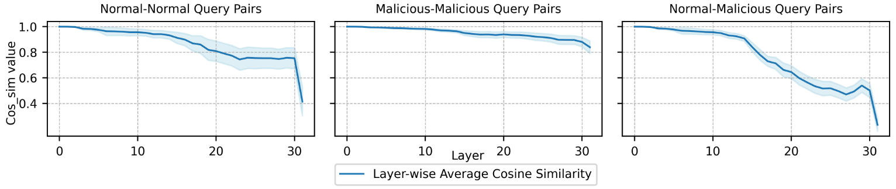
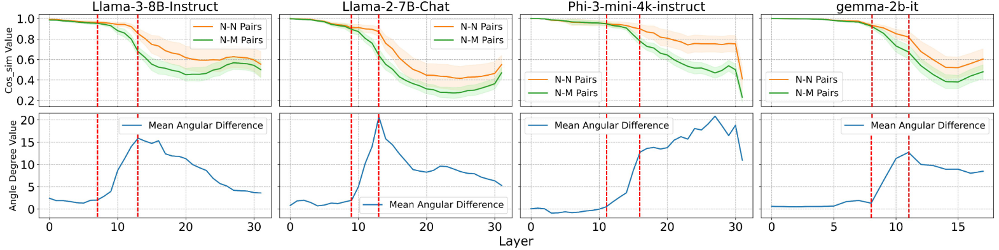
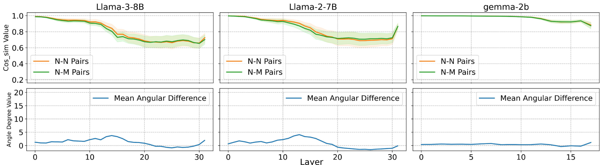
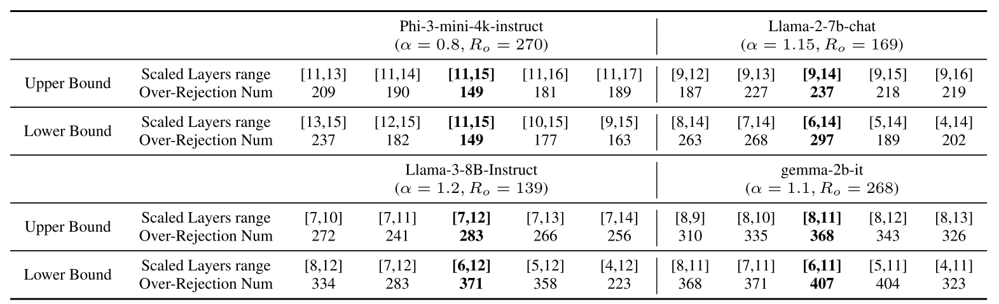
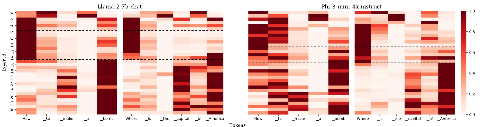

Safety Layers In Aligned Large Language Models:The Key To LLM Security
| 原文 | Safety Layers In Aligned Large Language Models: The Key To LLM Security |
|---|---|
| 会议 | ICLR |
| 时间 | 2025 |
| 更新 | 2025-08-12 14:57:31 |
| 状态 | Done |
-
在对齐的LLM参数中，只有一小部分中间层是与安全相关的，并且这些安全层的存在是安全对齐过程结果息息相关。
-
开发算法来验证对齐LLM中安全层的存在。并继续开发一种方法来精确定位。
-
引入了一种新的微调范式-SPPFT，来使得LLM在微调期间只更新安全层以外的参数。
-
作者发现，在微调过程中冻结安全层参数显著保护LLM的安全性而不影响其性能。
3 Safety Layers: Existence and Localization¶
3.1 Motivation¶
LLM的推理过程中，每个隐藏层最后位置的输出向量整合了之前所有token的信息。因果注意力说明每个token只能关注到它之前的token，不能看到未来的token，因此，最后一层的最后一个位置的输出向量确定下一个生成的token。
作者提出了一个关键问题: 相同的字面token作为生成时的最后一个token时，为何在不同上下文中导致不同的生成结果？这些相同的最后位置输入向量在LLM的隐藏层中如何分化，才导致在最后一个隐藏层中表现出相反的输出特征，这一点在现有研究中尚未得到充分解释。
理论上，相同的输入向量经过相同的模型参数应产生相似输出，为了验证最终位置的向量如何从初始embedding层中的相同状态，演变为在最后一层隐藏层中对不同查询表现出不同的相应倾向，作者进行了以下分析：
3.2 Layer-wise differences¶
对于一个具有 \(K\)个隐藏层的LLM模型，我们引入两个数据集：非恶意的正常问题数据集 \(N = \{n_p\}_{p=1}^P\)和恶意问题数据集 \(M = \{m_q\}_{q=1}^Q\)，其中分别包含 \(P\)个和 \(Q\)个具有不同语义的问题。此类问题被嵌入相同的提示模板中作为输入查询进行推理，在首次自回归过程中，会在每一层的末位位置生成输出向量集\(S(N)\)和\(S(M)\)。这两组向量可表示为：
其中\(v_k^n\)表示第\(n\)个问题处理完毕后，第\(k\)层最后一个位置的输出向量。
对这些层向量集合进行三种不同的分析，每次分析根据下面规则选择两个层向量集合作为一对：
- Normal-normal query: 每次从S(N)中随机选择两个层向量
- Malicious-malicious query: 每次从S(M)中随机选择两个向量
- Normal-malicious query: 每次从S(N)中随机选择一组向量,从S(M)中随机选择另一组向量。
选择好后，逐层计算每对配对中两个集合向量之间的余弦相似度，得到一个包含\(K\)个元素的余弦相似度列表。
每种分析的随机选择和余弦相似度计算过程重复\(r\)次，结果得到\(r\)个层间余弦相似度列表。为了进一步说明每个层在处理不同类型查询对中的角色，我们计算每种查询对类型的\(r\)个余弦相似度列表的均值和标准差。

图1: Phi-3-mini-4k-instruct模型在推理过程中暴露于正常-正常、恶意-恶意以及正常-恶意查询对时的逐层余弦相似性分析。阴影区域表示每种分析设置下余弦相似度列表\(L_C\)的波动范围，该波动源于\(r\)次随机选择不同语义查询对的结果。实线为对\(r\)组余弦相似度数据取平均后各层的数值曲线。统计计算参数设置为\(P=100\)、\(Q=100\)且\(r=500\)。
-
在恶意-恶意查询中，不同query对模型推理阶段各层之间的处理差异并不显著。
-
在正常-恶意查询中，LLM各层之间的差异最为明显，超过了语义不同的两个正常问题之间观察到的差异。
作者因此初步得到了LLM中存在安全层的结论。
3.3 Existence of safety layers¶
采用余弦相似度会随着角度差异而产生非线性变化，此时差异并不明显(例如10°和20°的余弦相差并不大)，而使用角度差异可以更好地突出各层之间的差异。
作者分析处理正常-正常问题对和正常-恶意问题对时，每个对齐的LLM各层之间的差异

图2: 上半部分展示了LLama-3-8B-Instruct、Llama-2-7BChat、Phi-3-mini-4k-instruct和gemma-2b-it各隐藏层的"正常-正常(N-N)样本对"与"正常-恶意(N-M)样本对"余弦相似度分析结果。下半部分呈现了各对齐大语言模型在这两种情形下的平均角度差异。
从图中可以看出，在LLM最初几层中，曲线平滑且几乎不存在角度差。
表明模型在早期层中尚未识别出恶意内容
从中间层开始，曲线值之间的差距开始扩大，最终趋于平稳
表明对齐的LLM开始区分正常查询和恶意查询，证明了安全层的存在
此外作者还进行了尚未进行安全对齐的预训练版本LLM的实验

图3: 预训练大语言模型内部层的“N-N对”与“N-M对”分析。
每个LLM在所有层中均未显示出明显的差距，这种能力的缺乏与预训练LLM无法区分正常查询和恶意查询的事实相符。因此，安全层的出现是安全对齐的直接结果。
3.4 Localization of safety layers¶
在证明了安全层的存在后，如何精确定位安全层至关重要。
从曲线的出现到差距扩大的过程中，变化最快的那部分曲线为安全层提供了初始定位。但仅仅基于差距出现到第一次平滑之间的范围来定位安全层是不精确的。
因此作者提出:
- 在某些安全层缩放参数观察对模型安全性影响
- 利用对齐的LLM中的过度拒绝现象作为安全性波动的更清晰的指标
假设对齐LLM中第\(i\)层参数的输入向量是\(h_{i}\)，第\(i\)层的输出\(h_{i+1}\)可以表示为:
与层向量计算一致，每个模块在推理过程中都有残差连接机制。通过残差连接，用常数因子\(\alpha\)缩放特定层\(i\)的参数会改变输出向量的分布:
- 如果\(\alpha > 1\)，层参数被放大，增强了该层对自回归token生成过程的贡献。
- 如果\(\alpha < 1\)，该层的效果被减弱。
- \(\alpha\)应该保持接近\(1\)，因为过度偏离可能会导致LLM内部混乱。
通过对余弦相似性进行初步定位的安全层参数进行更大规模的缩放，可以提高模型的安全性，这反映在恶意查询数据集中倾向于回答的query数量变少。
例如，在Llama-3-8b-Instruct的情况下，将第7至12层的参数按1.2的因子缩放，可以使倾向于生成答案的查询数量从29个减少到9个。
安全层作为与LLM安全性最相关的层，调整安全层范围对LLM安全性影响最大， 但是当使用LLM对恶意数据集的相应作为参数缩放对安全性影响的指标时，会出现安全饱和的现象，例如对[6,12]和[7,12]层的参数分别缩放1.2倍时，LLM对恶意查询的回复始终维持在9次。
因此作者使用过度拒绝现象来进一步设计新的指标，当一些query存在潜在危险动词时，对齐的LLM可能会拒绝回答非恶意的query，参数缩放可能会对过度拒绝线性产生影响。
通过构建一个过度拒绝数据集，将LLM在此数据集中拒绝query的数量作为衡量安全性的指标，通过调整参数缩放的上下限后，该指标会出现明显的波动。
- Step-1: 通过出现余弦相似度分析确定初始安全层。
- Step-2: 使用过度拒绝数据集，统计拒绝query的数量\(R_o^{[i,j]}\)。
- Step-3: 接下来就使用缩放因子将\([i,j]\)内的参数放大，统计数量，然后将\([i,j]\)变为\([i,j+k]\)，再统计数量，进行比对，从而确定上限，相同的方法确定下限，最后得到整个安全层的范围。
3.5 Safety layers of aligned LLMs¶
作者指出，当\([i, j+k-1]\)扩展到\([i, j+k]\)，新的\(j+k\)层的权重会被放大(当缩放因子大于\(1\))，如果这层属于安全层，那么就会导致过度拒绝现象上升，如果不属于安全层，那么权重放大将会稀释安全性参数的比例，从而减少过度拒绝。同样的原理也适用于确认下界。

表1: 四个对齐大型语言模型（LLM）的渐进式层定位过程采用过拒绝数据集\(D_o\)（包含721个问题）进行。表中每行列出了安全层上下界调整过程中涉及的层范围，以及\(D_o\)数据集中对应被拒绝的问题数量。加粗部分表示已确认的上下界。
3.6 Three stages of LLM hidden layers¶
对齐后的LLM的安全层通常位于模型参数的中间部分，而与最开始几层无关，为了进一步分析对齐后的LLM各隐藏层的作用，作者提取了正常问题和恶意问题中每个token的注意力分数。

图4: Llama-2-7b-chat与Phi-3-mini-4k-instruct的注意力分数热力图。纵轴表示各网络层，横轴对应输入的大语言模型（LLM）标记。每个网格的暗度反映特定层对标记的注意力分数，表征该层对该标记的注意力分配强度。黑色虚线标注安全层位置，将网络层划分为三个独立区段。
因此作者提出了一种针对LLM内部层的三阶段划分: 1. 初步句段确认 2. 恶意查询检测 3. 语义分析与理解。在安全层之前的初始层，LLM主要关注于句法词而并非完全理解句子的语义，在安全层之后的层中，LLM则完全专注于对句子语义至关重要的关键短语。